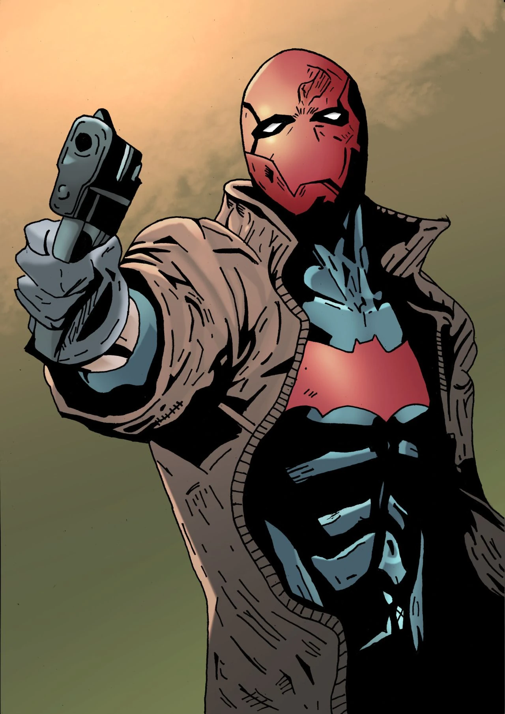

Jason Todd impede assalto no Beco do Crime
10/05/2006
O anti-herói agiu rapidamente durante o assalto, protegendo os cidadãos e prevenindo que o criminoso escapasse.
gothamvickvali


Capuz Vermelho (Jason Todd) era um Robin antes de virar o Capuz Vermelho. Após um trágico acidente onde foi supostamente morto, se revoltou pelo fato do Batman não ter matado o coringa para salva-lo, então decidiu seguir uma carreira independente.
10/05/2006
O anti-herói agiu rapidamente durante o assalto, protegendo os cidadãos e prevenindo que o criminoso escapasse.
gothamvickvali6/05/2006
Novas imagens mostram que o Capuz Vermelho adotou um novo sistema de blindagem mais leve, o deixando mais ágil e eficiente em combate.
gothamvickvali27/04/2006
Moradores relatam terem visto o herói patrulhando os telhados no bairro nobre. Especialistas acreditam que ele busca pistas.
gothamvickvali
14/04/2006
Fontes próximas indicam que Todd passou as últimas semanas aprimorando técnicas de perícia criminal para resolver casos arquivados.
gothamvickvali